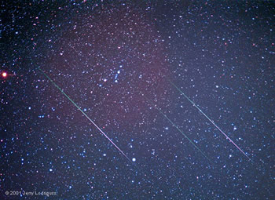

More commonly known as a shooting star, a meteor is the name given to both the particle itself and the light phenomenon produced when a solid particle (or meteoroid) enters the Earth’s atmosphere.

Three meteors from a Leonid meteor shower showing the long, narrow trails normally associated with these objects. The different colours in the meteor trails result from the de-excitation of different atmospheric molecules.
Credit: Jerry Lodriguss
Credit: Jerry Lodriguss
The majority of the incoming meteoroids are only a few millimetres across, but they enter the atmosphere at extremely high speeds (between 11 and 72 km/s) compressing the air in front of them. This compressed air raises the surface temperature of the meteor to over 2,000 Kelvin, at which point its outer layers begin to vapourise in a process called ablation. These vapourised atoms collide with surrounding atmospheric molecules to create an ionised ‘trail’ which, when it de-excites, produces the bright steak of light commonly associated with these objects. The resulting trail is only about a metre across but it can be many kilometres (typically 20 – 30 km) long depending on the speed of the meteor. It may also display many different colours, the result of the de-excitation of different atmospheric molecules.
Most meteors appear at altitudes between 80 – 110 km where the atmospheric density is high enough for ablation to occur. They typically last for between 0.1 and 10 seconds before they are decelerated sufficiently for ablation to cease. If they have not completely burnt up by this stage, they continue on their trajectory, and some may impact the Earth as meteorites.
The majority of meteors appear sporadically from random positions in the sky with typical rates of between 5 – 10 per hour. However, at certain times during the year, the rate of meteors increases and all meteors appear to come from a particular point called the radiant. These episodes are known as meteor showers and occur when the Earth passes through a meteor stream, a trail of debris left behind in the wake of a comet.
Occasionally a very bright meteor streaks across the sky. These are known as fireballs or, if they explode in mid-flight, bolides.